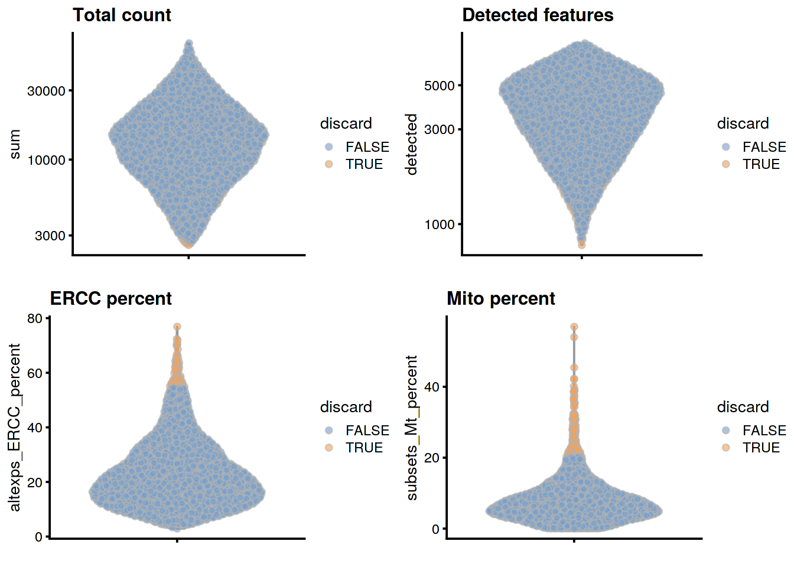
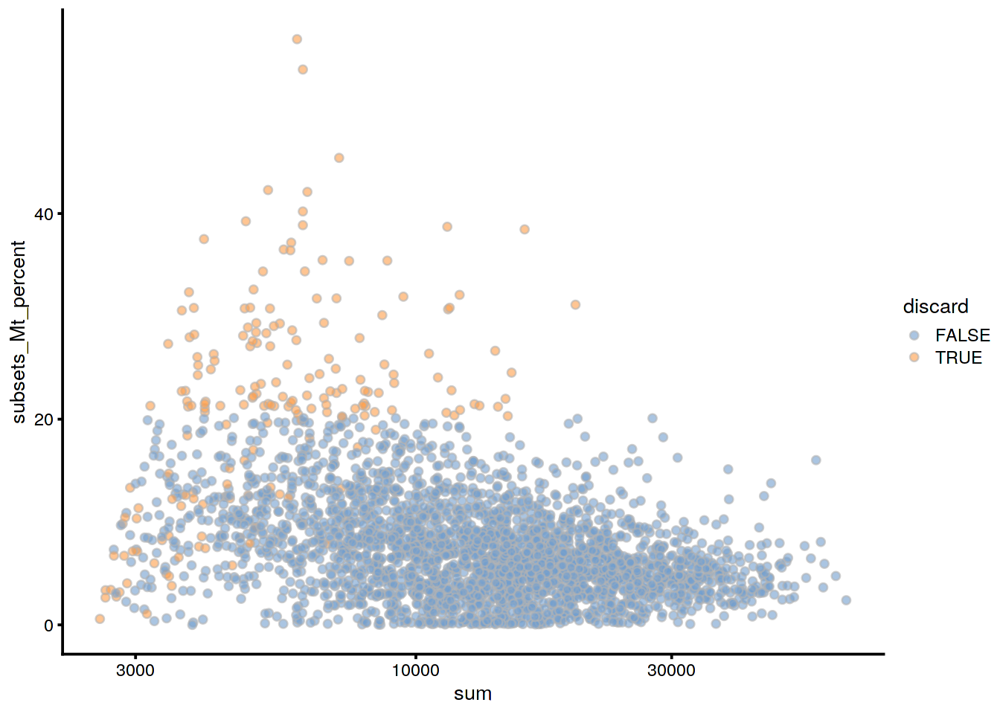
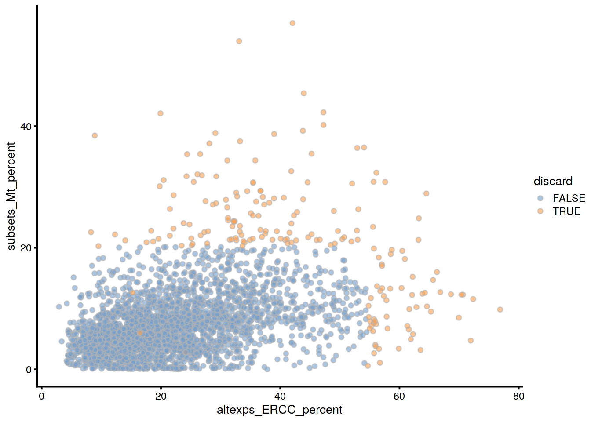
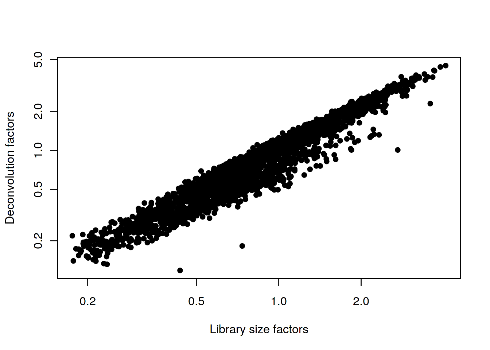
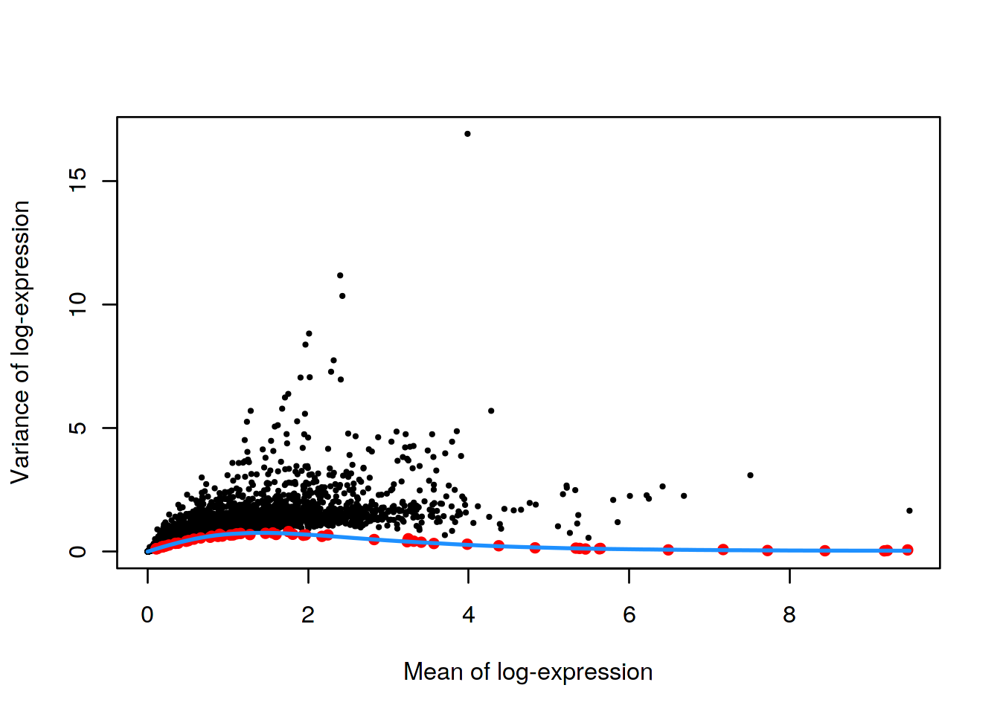
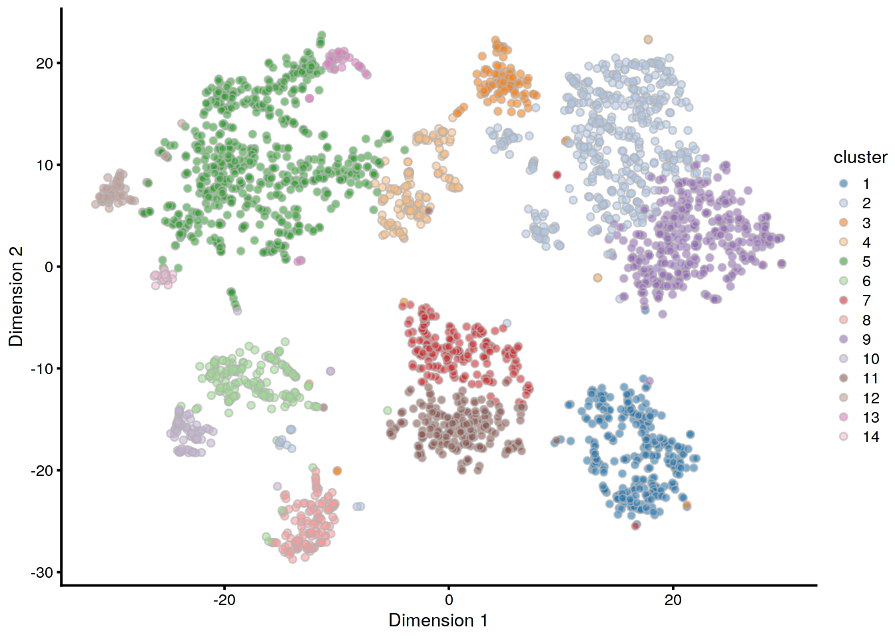
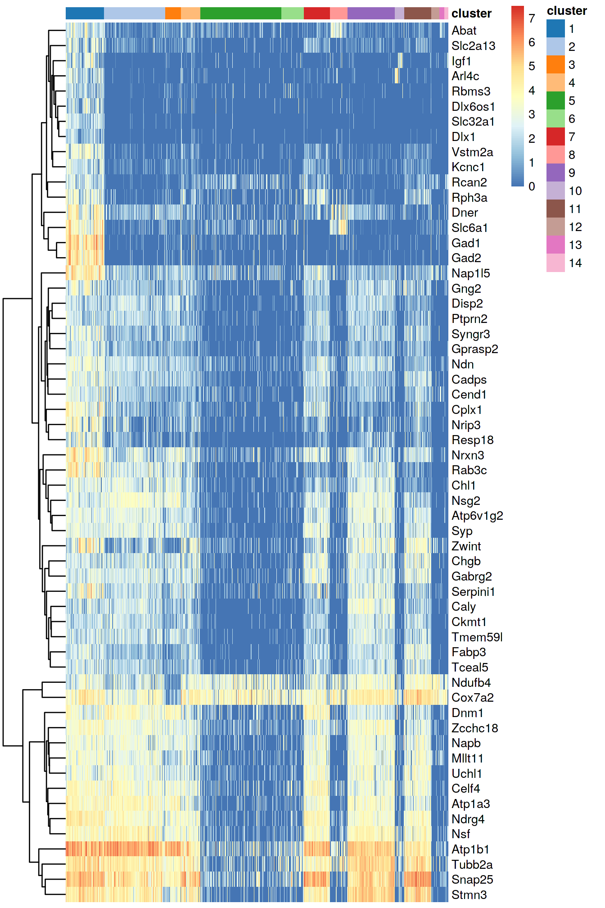
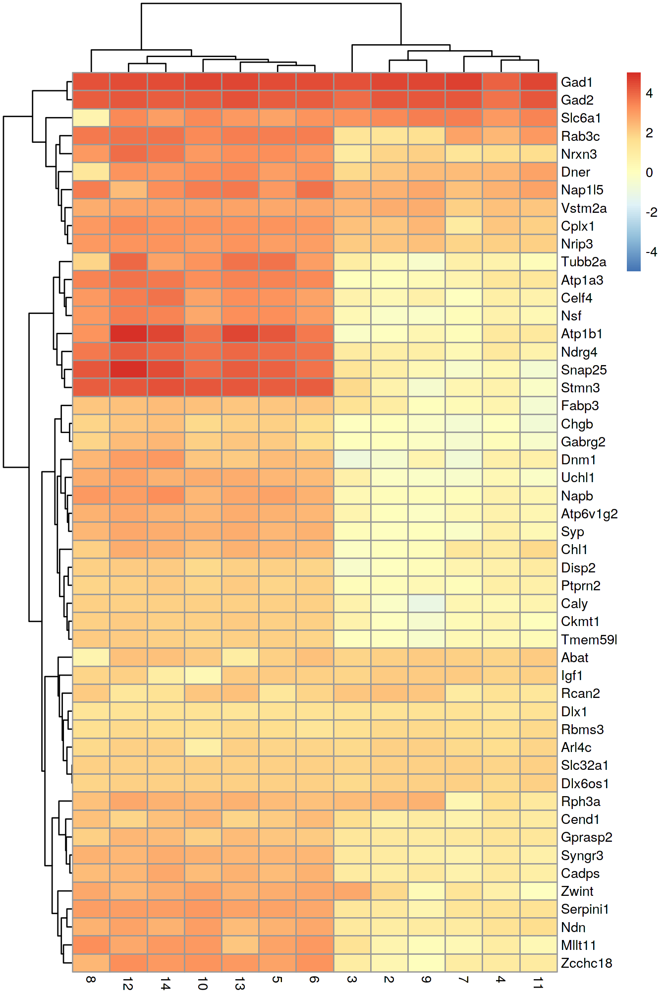

Chapter 22 Mouse brain dataset
22.1 Introduction
Here, we examine a heterogeneous dataset from a study of cell types in the mouse brain (Zeisel et al. 2015). This contains approximately 3000 cells of varying types such as oligodendrocytes, microglia and neurons. Individual cells were isolated using the Fluidigm C1 microfluidics system (Pollen et al. 2014) and library preparation was performed on each cell using a UMI-based protocol. After sequencing, expression was quantified by counting the number of unique molecular identifiers (UMIs) mapped to each gene.
22.2 Analysis
22.2.1 Data loading
We remove repeats and merge together redundant rows corresponding to alternative genomic locations for the same gene.
Specifically, we sum the counts for all rows corresponding to a single gene for ease of interpretation,
and create a new SingleCellExperiment with these aggregated counts.
22.2.2 Gene annotation
22.2.3 Quality control
The original authors of the study have already removed low-quality cells prior to data publication. Nonetheless, we compute some quality control metrics to check whether the remaining cells are satisfactory.
22.2.4 Normalization
22.2.5 Variance modelling
In theory, we should block on the plate of origin for each cell. However, only 20-40 cells are available on each plate, and the population is also highly heterogeneous. This means that we cannot assume that the distribution of sampled cell types on each plate is the same. Thus, to avoid regressing out potential biology, we will not block on any factors in this analysis.
22.2.6 Dimensionality reduction
Note that denoisePCA() automatically selects for genes with positive components,
so explicit specification of subset.row= is not required.
22.3 Results
22.3.1 Quality control statistics
colData(unfiltered) <- cbind(colData(unfiltered), stats)
unfiltered$discard <- qc$discard
gridExtra::grid.arrange(
plotColData(unfiltered, y="sum", colour_by="discard") +
scale_y_log10() + ggtitle("Total count"),
plotColData(unfiltered, y="detected", colour_by="discard") +
scale_y_log10() + ggtitle("Detected features"),
plotColData(unfiltered, y="altexps_ERCC_percent",
colour_by="discard") + ggtitle("ERCC percent"),
plotColData(unfiltered, y="subsets_Mt_percent",
colour_by="discard") + ggtitle("Mito percent"),
ncol=2
)


## low_lib_size low_n_features
## 0 3
## high_altexps_ERCC_percent high_subsets_Mt_percent
## 65 128
## discard
## 18922.3.2 Normalization
## Min. 1st Qu. Median Mean 3rd Qu. Max.
## 0.129 0.478 0.821 1.000 1.318 4.812plot(librarySizeFactors(sce.zeisel), sizeFactors(sce.zeisel), pch=16,
xlab="Library size factors", ylab="Deconvolution factors", log="xy")
22.3.3 Variance modelling
The technical and total variances are much smaller than those in the read-based datasets. This is due to the use of UMIs, which reduces the noise caused by variable PCR amplification. Furthermore, the spike-in trend is consistently lower than the variances of the endogenous genes. This reflects the heterogeneity in gene expression across cells of different types.
plot(dec.zeisel$mean, dec.zeisel$total, pch=16, cex=0.5,
xlab="Mean of log-expression", ylab="Variance of log-expression")
curfit <- metadata(dec.zeisel)
points(curfit$mean, curfit$var, col="red", pch=16)
curve(curfit$trend(x), col='dodgerblue', add=TRUE, lwd=2)
22.3.5 Clustering
##
## 1 2 3 4 5 6 7 8 9 10 11 12 13 14 15 16
## 72 534 167 195 206 101 197 593 129 203 85 14 200 42 53 25
22.3.6 Interpretation
We focus on upregulated marker genes as these can quickly provide positive identification of cell type in a heterogeneous population. We examine the table for cluster 4, in which log-fold changes are reported between cluster 4 and every other cluster. The same output is provided for each cluster in order to identify genes that discriminate between clusters.
markers <- findMarkers(sce.zeisel, sce.zeisel$cluster, direction="up")
marker.set <- markers[["4"]]
head(marker.set[,1:8], 10) # only first 8 columns, for brevity## DataFrame with 10 rows and 8 columns
## Top p.value FDR
## <integer> <numeric> <numeric>
## Snap25 1 1.89250170367202e-271 3.75453412991493e-267
## Mllt11 1 1.5114301658728e-198 5.99705261215018e-195
## Gad1 1 7.61960907109457e-179 1.88956780451806e-175
## Atp1a3 1 1.92427110285726e-168 2.54504096063905e-165
## Celf4 1 8.34102774997901e-168 1.03423530957396e-164
## Ndn 1 4.54700749300098e-144 3.75867006890193e-141
## Vstm2a 1 9.51443787058121e-109 3.49549875767522e-106
## Synpr 1 5.23099454814631e-72 6.25166872534186e-70
## Slc32a1 1 2.59209368203069e-66 2.49633721154405e-64
## Ndrg4 2 5.79430202499945e-236 5.74765789369854e-232
## logFC.1 logFC.2 logFC.3
## <numeric> <numeric> <numeric>
## Snap25 3.88670036821469 4.30914890423118 3.79720866242651
## Mllt11 3.16869973795579 3.00773025022756 3.10246654261723
## Gad1 4.1809765772547 4.18474848049613 4.12829492170707
## Atp1a3 3.26120492686749 3.56940415755333 3.29072198770609
## Celf4 2.76807817623127 3.24872640870414 2.79332190468448
## Ndn 3.04681475193341 2.61981616252683 2.79263185434029
## Vstm2a 3.0289770812524 3.02829841624827 3.03503666373167
## Synpr 3.20968070920293 3.00164389973715 3.32375802516086
## Slc32a1 1.83319809501735 1.82038329280149 1.83319809501735
## Ndrg4 3.8196774532832 4.03898665167331 3.74014483126438
## logFC.5 logFC.6
## <numeric> <numeric>
## Snap25 1.07670109293827 1.36615019990328
## Mllt11 1.56572545246833 1.60598297934231
## Gad1 3.74078692648298 4.03200792797037
## Atp1a3 1.56550859133349 0.0980072282917517
## Celf4 0.979799545755635 0.582277979848379
## Ndn 1.74510569393716 1.20437448171661
## Vstm2a 2.60017354688132 2.77643808672538
## Synpr 2.70722616294867 3.17927305686069
## Slc32a1 1.66697721376767 1.70366704904145
## Ndrg4 1.63090136754525 1.0479643935403The heatmap below indicates that most of the top markers are strongly DE in cells of cluster 4 compared to some or all of the other clusters. We can use these markers to identify cells from cluster 4 in validation studies with an independent population of cells. A quick look at the markers suggest that cluster 4 represents interneurons based on expression of Gad1 and Slc6a1 (Zeng et al. 2012), differing from closely related cells in cluster 11 by virtue of high Synpr expression.
top.markers <- rownames(marker.set)[marker.set$Top <= 10]
plotHeatmap(sce.zeisel, features=top.markers, columns=order(sce.zeisel$cluster),
colour_columns_by="cluster", cluster_cols=FALSE,
center=TRUE, symmetric=TRUE, zlim=c(-5, 5))
An alternative visualization approach is to plot the log-fold changes to all other clusters directly. This is more concise and is useful in situations involving many clusters that contain different numbers of cells.
logFCs <- as.matrix(marker.set[1:50,-(1:3)])
colnames(logFCs) <- sub("logFC.", "", colnames(logFCs))
library(pheatmap)
max.lfc <- max(abs(range(logFCs)))
pheatmap(logFCs, breaks=seq(-5, 5, length.out=101))
Session Info
R version 3.6.1 (2019-07-05)
Platform: x86_64-pc-linux-gnu (64-bit)
Running under: Ubuntu 14.04.5 LTS
Matrix products: default
BLAS: /home/ramezqui/Rbuild/danbuild/R-3.6.1/lib/libRblas.so
LAPACK: /home/ramezqui/Rbuild/danbuild/R-3.6.1/lib/libRlapack.so
locale:
[1] LC_CTYPE=en_US.UTF-8 LC_NUMERIC=C
[3] LC_TIME=en_US.UTF-8 LC_COLLATE=en_US.UTF-8
[5] LC_MONETARY=en_US.UTF-8 LC_MESSAGES=en_US.UTF-8
[7] LC_PAPER=en_US.UTF-8 LC_NAME=C
[9] LC_ADDRESS=C LC_TELEPHONE=C
[11] LC_MEASUREMENT=en_US.UTF-8 LC_IDENTIFICATION=C
attached base packages:
[1] parallel stats4 stats graphics grDevices utils datasets
[8] methods base
other attached packages:
[1] pheatmap_1.0.12 BiocSingular_1.1.7
[3] scran_1.13.25 org.Mm.eg.db_3.8.2
[5] AnnotationDbi_1.47.1 scater_1.13.24
[7] ggplot2_3.2.1 scRNAseq_1.99.6
[9] SingleCellExperiment_1.7.11 SummarizedExperiment_1.15.9
[11] DelayedArray_0.11.6 BiocParallel_1.19.3
[13] matrixStats_0.55.0 Biobase_2.45.1
[15] GenomicRanges_1.37.16 GenomeInfoDb_1.21.2
[17] IRanges_2.19.16 S4Vectors_0.23.24
[19] BiocGenerics_0.31.6 Cairo_1.5-10
[21] BiocStyle_2.13.2 OSCAUtils_0.0.1
loaded via a namespace (and not attached):
[1] bitops_1.0-6 bit64_0.9-7
[3] RColorBrewer_1.1-2 httr_1.4.1
[5] tools_3.6.1 backports_1.1.5
[7] R6_2.4.0 irlba_2.3.3
[9] vipor_0.4.5 DBI_1.0.0
[11] lazyeval_0.2.2 colorspace_1.4-1
[13] withr_2.1.2 tidyselect_0.2.5
[15] gridExtra_2.3 bit_1.1-14
[17] curl_4.2 compiler_3.6.1
[19] BiocNeighbors_1.3.5 labeling_0.3
[21] bookdown_0.14 scales_1.0.0
[23] rappdirs_0.3.1 stringr_1.4.0
[25] digest_0.6.21 rmarkdown_1.16
[27] XVector_0.25.0 pkgconfig_2.0.3
[29] htmltools_0.3.6 limma_3.41.17
[31] dbplyr_1.4.2 rlang_0.4.0
[33] RSQLite_2.1.2 shiny_1.3.2
[35] DelayedMatrixStats_1.7.2 dplyr_0.8.3
[37] RCurl_1.95-4.12 magrittr_1.5
[39] GenomeInfoDbData_1.2.1 Matrix_1.2-17
[41] Rcpp_1.0.2 ggbeeswarm_0.6.0
[43] munsell_0.5.0 viridis_0.5.1
[45] edgeR_3.27.13 stringi_1.4.3
[47] yaml_2.2.0 zlibbioc_1.31.0
[49] Rtsne_0.15 BiocFileCache_1.9.1
[51] AnnotationHub_2.17.10 grid_3.6.1
[53] blob_1.2.0 dqrng_0.2.1
[55] promises_1.0.1 ExperimentHub_1.11.6
[57] crayon_1.3.4 lattice_0.20-38
[59] cowplot_1.0.0 locfit_1.5-9.1
[61] zeallot_0.1.0 knitr_1.25
[63] pillar_1.4.2 igraph_1.2.4.1
[65] codetools_0.2-16 glue_1.3.1
[67] evaluate_0.14 BiocManager_1.30.4
[69] vctrs_0.2.0 httpuv_1.5.2
[71] gtable_0.3.0 purrr_0.3.2
[73] assertthat_0.2.1 xfun_0.10
[75] rsvd_1.0.2 mime_0.7
[77] xtable_1.8-4 later_0.8.0
[79] viridisLite_0.3.0 tibble_2.1.3
[81] beeswarm_0.2.3 memoise_1.1.0
[83] statmod_1.4.32 interactiveDisplayBase_1.23.0Bibliography
Pollen, A. A., T. J. Nowakowski, J. Shuga, X. Wang, A. A. Leyrat, J. H. Lui, N. Li, et al. 2014. “Low-coverage single-cell mRNA sequencing reveals cellular heterogeneity and activated signaling pathways in developing cerebral cortex.” Nat. Biotechnol. 32 (10):1053–8.
Zeisel, A., A. B. Munoz-Manchado, S. Codeluppi, P. Lonnerberg, G. La Manno, A. Jureus, S. Marques, et al. 2015. “Brain structure. Cell types in the mouse cortex and hippocampus revealed by single-cell RNA-seq.” Science 347 (6226):1138–42.
Zeng, H., E. H. Shen, J. G. Hohmann, S. W. Oh, A. Bernard, J. J. Royall, K. J. Glattfelder, et al. 2012. “Large-scale cellular-resolution gene profiling in human neocortex reveals species-specific molecular signatures.” Cell 149 (2):483–96.